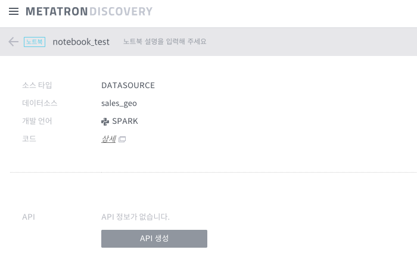

노트북 활용하기¶
노트북을 생성하였으면, 스크립트를 작성하고 REST API를 통해 서비스할 수 있습니다. 노트북 활용 절차는 다음과 같습니다.
노트북 상세 조회¶
워크스페이스 화면에서 분석하고자 하는 노트북을 선택하면, 아래와 같은 상세 화면이 나타납니다. 노트북 생성 시 입력했던 데이터 타입과 데이터 소스 이름, 개발 언어, 코드를 조회할 수 있습니다.

노트북 코딩¶
노트북 상세 조회 화면에서 코드 란의 상세를 클릭하면, 노트북 페이지가 나타납니다. 노트북 페이지 상단에는 데이터셋을 로딩하는 코드가 삽입되어 있으며, 해당 셀을 실행하면 dataset 객체에 JSON 포맷의 데이터셋이 로딩됩니다.

위 화면은 Zeppeline을 선택한 경우에 나타나며, 생성 시 선택한 데이터의 로딩을 위한 셀이 삽입되어 있습니다. 3번째 셀부터 프로그램 코딩 작업을 수행한 후 개발이 완료되면 저장 버튼을 클릭하십시오.
노트북 API 등록하기¶
작성한 노트북은 REST API 를 호출하여 결과값을 반환할 수 있습니다. 아래 설명을 참조하여 리턴타입을 선택한 후 이름과 설명을 기입하십시오.

HTML: 노트북 스크립트 전체 실행 결과 화면을 HTML로 반환합니다.
JSON: 노트북 스크립트에 작성된 사용자가 정의한 포맷의 JSON 객체를 결과로 반환합니다. 이 때 Metatron Discovery에서 제공하는
response.write(...)함수를 사용하며, 예시 코드는 다음과 같습니다.
R 기반 노트북:
response.write(list(coefficient = 2, intercept = 0))Python 기반 노트북:
response.write({'coefficient' : 2.5, 'intercept' : 0})없음: 노트북 스크립트를 실행하되 반환값은 제공하지 않습니다.
API 정보를 모두 입력한 후 마침 버튼을 클릭하면 API생성이 완료되고 아래와 같은 REST API URL을 확인할 수 있습니다. Result 버튼을 클릭하면 URL 실행 결과값을 팝업으로 조회할 수 있습니다.